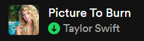
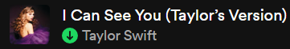
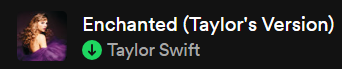
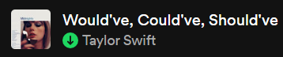
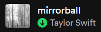
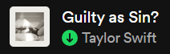
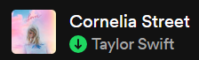

#11 Taylor Swift (Debut) (Score = ???)

- 
Not much to say, havent listened to almost any of it, dont really remember any other songs from it either, no opinion basically (tho I dont love country music)
#10 Fearless (Score = 0.735)


Not even a bad album at all, just don't like it as much as the others, has some solid songs, although the style itself I find gets somewhat uninteresting for me pretty quickly, I'd listen to some of its songs every of its songs just every so often for a certain mood. Also don't think I've listened to all the songs.
#9 Speak Now (Score = 0.743)

- 
-

- 
Some more good songs, although similar to Fearless I am not very familiar with most of the songs, may have heard them a bit at some point but for both of these I could try listening to all their songs in one run to give them a fairer chance, but still don't think their positions will move that much in the ranking.
#8 Red (Score = 0.773)


This feels almost like a 'superior' second part of Fearless to be honest. Like, for the most part it has many similar themes in similar songs, tho emphazising more in looking back on love, rather than looking forward to it. Also, elephant in the room, All Too Well is a masterpiece, All Too Well may be one of the greatest songs of our modern era, but All Too Well is not an entire album, and while I like Nothing New and the other songs are mostly good, they get notably outshined. And don't get me wrong, I actually think Red is the perfect album for All Too Well to be in, in terms of concepts and themes, it feels like a Red song... but at the same time it feels so many steps above basically every other song in the album, that maybe it even ends up limiting the album's score, since while it does obviously add to it, it also shows the potential that Red themes had, it makes me ask why the other songs fall so behind in comparison.
#7 Midnights (Score = 0.862)

-

-

- 
-

Yeah... deep down I kinda knew this would happen. It's been a wild ride for Midnights in the rankings, starting out as a Top 2, but mainly due to bias based on how it was the first album I listened to, and by far the one I've listened to the most. I want to make clear tho, although my opinions fluctuate as I listen to more songs (and with time itself), for now I think there is a huge difference between the top 8 and the top 7, I like Midnights noticeably more than Red, even if it doesnt have a song like ATW.
#6 folklore (Score = 0.873)
-

-

- 
I know... I know... I apologize in advance, although to be fair, Top 6 Taylor Swift album is a huge honor, there's some serious contenders to beat up there, and I am fully aware that I'm sinning from not having listened that much to the entire album, and I do have a feeling it will be similar to evermore in my previous Taylor ranking, where I knew I would rank it a lot higher once I listened to it some more. Beyond the great songs, I really like the lower tones, the 'indie' vibe and how it was pretty innovative in the risk it took (by being so different from all the others), with such great payoff.
#5 The Tortured Poets Department (Score = 0.882)
-

- 
-

May come off as a surprise, I also think (like you said yourself) it's hard for me to judge an album so recently, I'll probably need some more time listening to all of the songs, and waiting for the novelty factor to normalize a bit. But for now, I like the theme, the melodies, the lyrics, has several great songs, why not rank it here? I have a feeling it'll lose to folklore in the future, or maybe it wont, regardless, number 5.
#4 lover (Score = 0.918)

-

- 
-

Now we're talking for real, this is what I call a Top Tier album. I've previously said it was the most irregular album on Taylor's discography (which may be true, idk) but I was definitely understating just how high its peaks were. Heck, (as you can see in the Top30) if I take into account only my Top 10 Taylor songs, Lover might just be my favorite album. It has a distinct style and conveys maybe the strongest messages out of any Taylor Swift album. A few songs may be 'prey' but others are indeed, The Archer. Who could rank this album as the Top? But who couldnt?
#3 1989 (Score = 0.920)


A really close call between Top 4, Top 3 and Top 2 actually. Back to 1989, I like how you called this album 'Pop Perfection' and if it's worth anything, it's kinda objectively the most popular (and perhaps influential) album, not only from Taylor Swift, but from the entire 2010s, or even the last 20 years of music. Consistent hits, especially distinguished by the musical production, although has some great lyrics and while the Taylor's Version is controversial, I think the Vault songs were great additions of quality and depth to the album.
#2 evermore (Score = 0.924)


It happened. Actually, I still have plenty of songs to listen a bit more to and incorporate them, but even barring that, evermore skyrockets to the top. I love the vibe, the music, the tone, and omg the lyrics. It works off that innovative platform laid previously by evermore, but expanding it even more. It has amazing songs, and perfect combinations of every musical aspect to make this masterpiece of an album. I want to point out once again though, it was truly a very close call between Lover, 1989 and evemore (which might sound surprising given how their styles seem like polar opposites, but I see them as the 3 axis and foundations that make Taylor Swift's style).
#1 reputation (Score = 0.946)


And that style is perfectly expressed in this masterpiece of an album. It's alwayd been Top 1, and I don't think it's going anywhere anytime soon. If Midnights made me like Taylor Swift, Reputation made me love Taylor Swift. Beyond the backstory, the lore and everything that this release meant, the music itself is so good it actually hurts (honey, it hurts). It is the perfect combination of everything, music, production, lyrics, messages, it has no skips, it's by far the one I've listened to the most, and individually it has undoubtedly some of my favorite songs of all time (beyond just Taylor). And actually has the most appearances in the Top 30 as well. It's reputation, what else is there to say? It marked a before and after in Taylor's discography, in the music world, and in my life in terms of music.